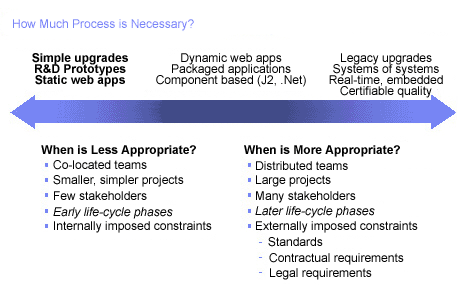

| Concept: Adapt the Process |
 |
|
DiscussionMore process, such as usage of more artifacts, production of more detailed documentation, development and maintenance of more models that need to be synchronized, and more formal reviews, is not necessarily better. Rather, we need to right-size the process to project needs. As a project grows in size, becomes more distributed, uses more complex technology, has larger number of stakeholders, and needs to adhere to more stringent compliance standards, the process needs to become more disciplined. But, for smaller projects with co-located teams and known technology, the process should be more lightweight. 
Factors driving the amount of process discipline. A project should adapt process ceremony to lifecycle phase. In the beginning of the project on the one hand, we are usually faced with a lot of uncertainty, and we must strongly encourage creativity to develop an application that addresses business needs. More process typically leads to less creativity, not more; we must therefore minimize process in the early stages of a project where uncertainty is an every day factor. Late in the project, on the other hand, we will need to introduce more control, such as change control boards, to prevent undesired creativity and associated risk, which often leads to the late introduction of defects into the product: This translates to more process. An organization should strive to continuously improve the process. Consider performing an assessment after each iteration and at project end to capture lessons learned, and leverage that knowledge to improve the process. Encourage all team members to continuously look for opportunities to improve. Finally, it is critical to balance project plans and associated estimates with the uncertainty of a project. This means that, early in projects, when uncertainty is typically large, plans and associated estimates will focus on big-picture planning and estimates, rather than aiming at providing high levels of precision when there is in fact none. Early development activities should aim at driving out uncertainty to gradually enable increased precision in planning. |
Licensed Materials - Property of IBM |